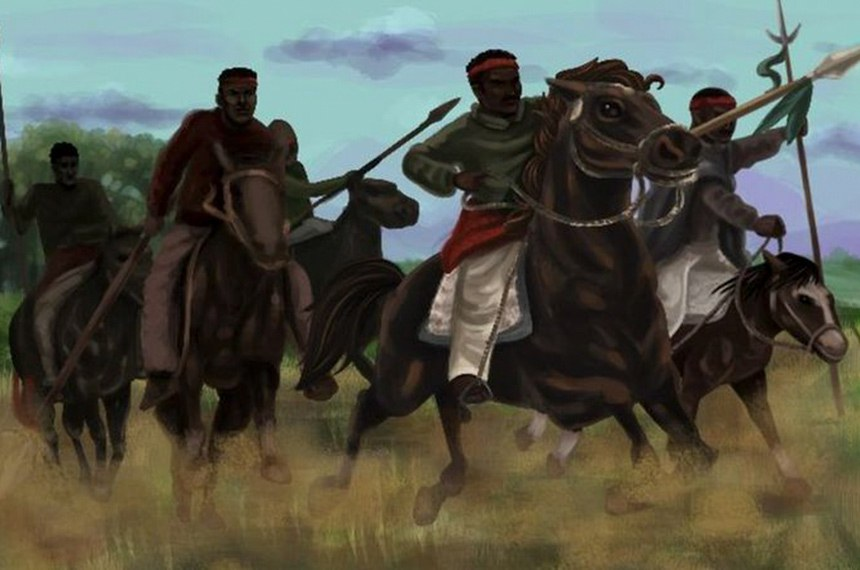

Descobrimento do Brasil

O Descobrimento do Brasil é um marco histórico crucial que teve um impacto duradouro não apenas na história do Brasil, mas também na história mundial. Em 22 de abril de 1500, a frota portuguesa liderada por Pedro Álvares Cabral aportou nas terras que mais tarde seriam conhecidas como Brasil. Este evento representou o início do contato entre os povos indígenas nativos e os europeus, inaugurando um período de exploração, colonização e intercâmbio cultural.
A viagem de Cabral, inicialmente destinada à Índia, resultou no achamento acidental do Brasil. Esse encontro fortuito entre duas culturas tão diferentes teve consequências profundas, incluindo o estabelecimento do domínio colonial português sobre a região, a introdução de culturas, tecnologias e idiomas europeus no continente americano e, infelizmente, a exploração e subjugação dos povos indígenas.
O Descobrimento do Brasil desencadeou uma série de eventos que moldaram a história do país, incluindo o ciclo do pau-brasil, a colonização sistemática, a introdução da cultura da cana-de-açúcar e, posteriormente, o tráfico de escravos africanos. Esses eventos, juntamente com a miscigenação resultante entre europeus, indígenas e africanos, formaram a base da sociedade e cultura brasileiras.
Embora o termo "descobrimento" seja muitas vezes questionado por sua carga eurocêntrica e pela presença de povos indígenas há milênios na região, o 22 de abril de 1500 marca um momento-chave na história brasileira e global, que continua a influenciar as dinâmicas sociais, políticas e culturais do Brasil até os dias de hoje.
A Guerra dos Farrapos

A Guerra dos Farrapos, também conhecida como Revolução Farroupilha, foi um conflito armado que ocorreu no Brasil entre 1835 e 1845, na então Província de São Pedro do Rio Grande do Sul, atual estado do Rio Grande do Sul. A guerra teve origem em uma série de descontentamentos políticos, econômicos e sociais, especialmente entre os fazendeiros gaúchos, conhecidos como "farrapos".
As causas da guerra incluíam a insatisfação com a centralização do poder político no Brasil imperial, a alta carga tributária sobre o charque, principal produto da região, e a demanda por maior autonomia provincial. Liderados por figuras como Bento Gonçalves da Silva, os farrapos proclamaram a República Rio-Grandense em 1836, buscando separar a província do restante do país.
A guerra foi marcada por uma série de batalhas e confrontos, com períodos de avanço e recuo de ambos os lados. O conflito teve impactos significativos na sociedade gaúcha e no próprio Brasil, gerando instabilidade política e econômica. Além disso, a guerra teve desdobramentos regionais e internacionais, com intervenções estrangeiras, como o apoio da França e da Grã-Bretanha aos farrapos.
A guerra chegou ao fim em 1845, com a assinatura de um acordo de paz que concedeu anistia aos revoltosos e garantiu certa autonomia à província. Embora os farrapos tenham sido derrotados militarmente, seu legado perdurou, contribuindo para a consolidação da identidade regionalista gaúcha e para debates sobre federalismo e descentralização do poder no Brasil. A Guerra dos Farrapos representa um capítulo importante na história brasileira, destacando as lutas por autonomia e as tensões entre centro e periferia no país.